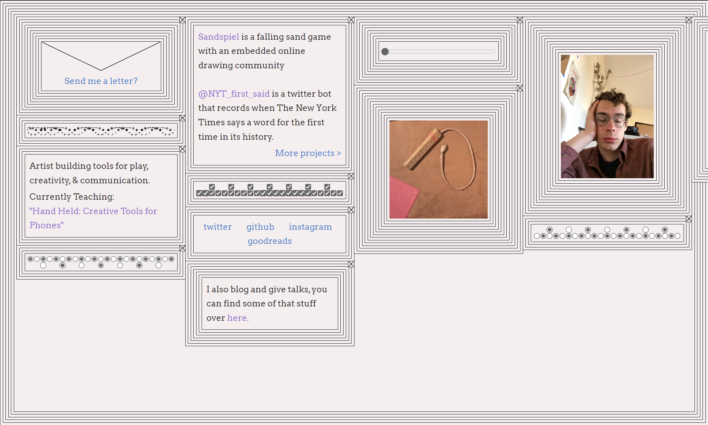

Assesment One

Week 2 Questions
What was the first thing you paid attention to when interacting with the experience?
answer
Spend two minutes with the experience and create a list of each of your discrete actions.
answer
What part of the experience did you spend the most time engaging with?
answer
What was the most common action in your two minute interaction with the experience?
answer
What is your impression of the intended primary goal of the interactive experience?
answer
What is your impression of how the interactive experience communicates its primary goal?
answer
What is your impression of how the experience should be interacted with over time? (For how long and how many different times)
answer
What is your impression of how the interactive experience communicates how it should be interacted with over time?
answer
Week 3 Questions
What other media forms (digital or otherwise) does the experience reference?
answer
What does this reference or references suggest to you about how you should act when engaging with it?
answer
What does this reference or references suggest to you about how you should feel when engaging with it?
answer
What is the most frustrating element of the interaction to you and what makes it frustrating?
answer
What is the most satisfying element of the interaction to you and what makes it satisfying?
answer